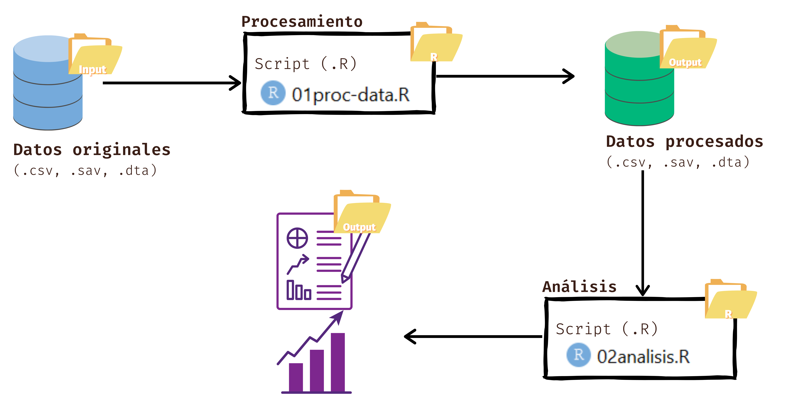
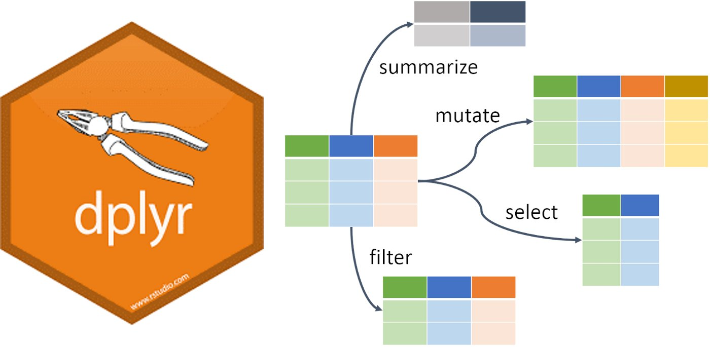

install.packages("paquete")
library(paquete)Práctica 3. Procesamiento, limpieza y manipulación de datos en R
Sesión del jueves, 11 de mayo de 2023
Presentación
Objetivo de la práctica
El objetivo de esta guía práctica es revisar algunos procedimientos básicos de la preparación de datos con R, los cuales son necesarios para luego poder aplicar los contenidos más específicos de este curso.
En detalle, aprenderemos:
Establecer un flujo de trabajo ordenado en un script (.R).
Instalar y cargar paquetes y librerías, así como también leer bases de datos en R.
Limpiar, transformar y exportar bases de datos en R.
¡Al final de esta práctica la idea es que cada un_ elabore y entienda su propio documento de preparación de datos!
Recursos de la práctica
En esta práctica trabajaremos con un subset de los datos del Estudio Longitudinal Social de Chile (ELSOC) realizado por COES. Esta base la pueden encontrar en el canal de U-Cursos sección Material Docente, o bien, en el siguiente enlace ELSOC 2022 podrán descargar el archivo que contiene la base ELSOC 2022.
Recuerden que siempre es importante trabajar con el manual/libro de códigos de las bases de datos. El manual de la ELSOC 2022 lo pueden encontrar aquí.
Flujo de trabajo reproducible
Por temas de orden y reproducibilidad, en este curso vamos a separar en dos momentos el trabajo con datos, y dos archivos de código correspondientes:
Preparación: corresponde a lo que se conoce generalmente como “limpieza”, es decir, realizar las modificaciones necesarias a los datos para poder efectuar los análisis. Estas modificaciones previas al análisis son necesarias ya que los datos originales con los que se va a trabajar en general no vienen perfectamente adaptados a los análisis que se quieren hacer. Por lo tanto, en cuanto a datos también hacemos la distinción entre datos originales y datos preparados (o procesados).
Análisis: se relaciona con análisis estadísticos, en este caso descriptivos, asociados a las preguntas e hipótesis de investigación.
Los procesos de preparación y análisis vinculados tanto a datos y resultados se presentan en el siguiente esquema:

Tanto la preparación como el análisis (que son parte del concepto más general de procesamiento) quedan registrados cada uno en un archivo de código respectivo.
En esta guía nos centraremos en la preparación de datos con R. El documento de código de preparación tiene, por lo menos, 4 partes más una sección de identificación inicial:
- Identificación y descripción general: Título, autor(es), fecha, información breve sobre el contenido del documento
- Librerías: instalar/cargar librerías a utilizar
- Datos: carga de datos
- Procesamiento: limpiar y transformar datos
- Guardar y exportar: generación de base de datos preparada para el análisis
En la práctica, tu script debería (ojalá siempre) verse así:
.png)
Procesamiento de datos
1 Cargar librerías
En R se trabaja a partir de paquetes (packages). ¿Qué son? De forma resumida, los paquetes son un conjunto de funciones o herramientas que pueden ser usadas en R. Los directorios de R donde se almacenan los paquetes se denominan librerías. La lógica es instalar paquetes y luego cargar (o llamar) las librerías cada vez que es necesario usarlas.
Usualmente para cargar paquetes lo hacemos de la siguiente manera:
Pero en esta ocasión utilizaremos un paquete llamado pacman, que facilita y agiliza la lectura (instalación y carga) de los paquetes a utilizar en R. De esta forma lo instalamos 1 única vez así:
install.packages("pacman")
library(pacman)Luego instalaremos y cargaremos los paquetes de R de la siguiente manera, volviendo más eficiente el procedimiento de carga de paquetes.
En este práctico utilizaremos seis paquetes
pacman: este facilita y agiliza la lectura de los paquetes a utilizar en Rtidyverse: colección de paquetes, de la cual utilizaremos dplyr y havendplyr: nos permite seleccionar variables de un set de datoshaven: cargar y exportar bases de datos en formatos .sav y .dtacar: para recodificar/agrupar valores de variablesmagrittr: para manipular datos con%>%
pacman::p_load(tidyverse, # colección de paquetes para manipulación de datos
dplyr, # para manipular datos
haven, # para importar datos
car, # para recodificar datos
magrittr)# para manipular datos
options(scipen = 999) # para desactivar notacion cientifica
rm(list = ls()) # para limpiar el entorno de trabajoComo se puede ver, antes de la función p_load hay un ::, esto se refiere a que se “fuerza” que esa función provenga de ese paquete (en este caso del paquete pacman).
2 Importar datos
En R es es posible importar y exportar datos que se encuentren en cualquier formato: ya sea .csv, .dta, .sav, .xlsx y, por supuesto, .rds y .RData. Sin embargo, para poder hacerlo lo primero es instalar y cargar las librerías que contienen las funciones necesarias para la importación de distintos tipos de archivos.
Pero, ¿dónde están mis datos? Como hemos mencionado, nuestros datos los dejaremos en la carpeta input/data de nuestro proyecto. La base con la que trabajaremos en este práctico pueden encontrarla en el material docente en U-Cursos, o bien, en el siguiente enlace.
Luego de descargar la base de datos, asegurate de dejar el archivo .sav en la carpeta input/data de tu proyecto. Nota: Los datos tendrán distinto nombre según su formato (.sav, .csv, .dta, etc.).
Una vez descargados los datos y cargado el paquete haven, procedemos a importar nuestra base de datos. Para ello, en nuestro script, dejamos indicado que a partir de la lectura de los datos con read_sav(), crearemos un objeto llamado elsoc_2022. Fijate en el Enviroment, ya que si lo anterior se logra, el objeto aparecerá allí.
La estructura general para importar datos es la siguiente:
read_*("ruta_hacia_archivo/nombre_archivo.*")
elsoc_2022 <- read_sav("ELSOC W06 v1.0 SPSS.sav") # No funciona
elsoc_2022 <- read_sav("input/data/ELSOC W06 v1.0 SPSS.sav") # No funciona
elsoc_2022 <- read_sav("input/data/ELSOC_W06_v1.0_SPSS.sav") # Si funciona!
Nota
Para importar los datos en R debemos tener en consideración tres cosas:
Cómo se llaman los datos (en nuestro caso ELSOC_W05_v1.0_SPSS)
El formato de nuestros datos (en nuestro caso .sav)
El lugar de donde están alojados nuestros datos
2.1.1 Importar datos en otros formatos
No siempre nuestros datos vendrán en un único formato. Para ello, R cuenta con otras formas de leer distintos tipos de formatos. Puedes ver las principales en el siguiente enlace.
3 Explorar datos
Lo más probable es que no trabajemos con todos los datos que importamos, por lo que debemos seleccionar aquellas variables con las que trabajaremos para nuestro problema de investigación (cualquiera sea).
Pero, para ello primero debemos explorar nuestros datos, si no ¿cómo puedo saber qué seleccionar y qué no? En R, las funciones más comunes para explorar datos son:
View(elsoc_2022) # Ver datos
names(elsoc_2022) # Nombre de columnas
dim(elsoc_2022) # Dimensiones
str(elsoc_2022) # Estructura de los datos (las clases y categorias de repuesta)Tenemos una base de datos con 1000 casos o filas y con 13 variables o columnas.
4 Limpiar datos
Para todos los subprocesos que involucra la “limpieza” de datos, tenemos al menos dos maneras. Por un lado, podemos usar las funciones de R base, es decir, que no requieren paquetes extras. Por el otro, podemos usar las funciones del paquete dplyr(), que es una gramática o dialecto de manipulación de datos que proporciona un conjunto de coherente funciones o “verbos” básicos para programar.

Pero, ¿por qué gramática y verbos? Porque a diferencia de otras formas de programar, dplyr() está orientado a escribir código como la escritura normal, es decir, de izquierda a derecha. Generalmente, la estructura de dplyr() es:
dplyr::funcion(datos, variable1, variable2, variable_n)
En este práctico solo nos centraremos en manipular datos con dplyr(). Para conocer cómo hacer lo mismo pero con R base visita este enlace.

4.1 Seleccionar
Una vez tenemos claras cúales son las variables que nos interesan, las seleccionamos y almacenamos en una nueva base de datos. Esto debido que evitará confusiones y hará más eficiente nuestros analísis en términos de memoria.
En R base, el primer argumento dentro del bracket [] refiere a las filas y el segundo a las columnas. De manera similar, la función select() de dplyr facilita el trabajo a la hora de seleccionar variables. La estructura general del comando siempre es select(datos, variable1, variable2, variable3).
Hay distintas formas de usar select(), ¡veámoslas!
Por indexación o ubicación en la base de datos:
dplyr::select(elsoc_2022, 1, 2) # la primera y la segunda columna
dplyr::select(elsoc_2022, 1:4) # la primera hasta la cuarta columna
dplyr::select(elsoc_2022, c(1, 4, 5)) # la primera, la cuarta y la quinta columnaTambién podemos usar el nombre de la variable/columna. Si conocemos el nombre de la variable simplemente lo podemos poner y se seleccionará. Con select() no es necesario poner los nombres con comillas " ":
dplyr::select(elsoc_2022, m0_sexo, m0_edad, m13)# A tibble: 1,000 × 3
m0_sexo m0_edad m13
<chr> <dbl> <dbl>
1 Hombre 38 4000000
2 Mujer 45 2700000
3 Hombre 42 600000
4 Hombre 29 1250000
5 Mujer 53 500000
6 Mujer 52 NA
7 Mujer 50 NA
8 Mujer 57 0
9 Mujer 47 600000
10 Hombre 79 NA
# … with 990 more rowsOtra cosa que podemos hacer es renombrar las variables al momento de seleccionarlas, para que tengan un sentido más sustantivo para nosotros.
dplyr::select(elsoc_2022, sexo = m0_sexo, edad = m0_edad, ingreso = m13)# A tibble: 1,000 × 3
sexo edad ingreso
<chr> <dbl> <dbl>
1 Hombre 38 4000000
2 Mujer 45 2700000
3 Hombre 42 600000
4 Hombre 29 1250000
5 Mujer 53 500000
6 Mujer 52 NA
7 Mujer 50 NA
8 Mujer 57 0
9 Mujer 47 600000
10 Hombre 79 NA
# … with 990 more rowsPor último, podemos usar select() para reordenar nuestras variables, lo cual es importante por si por ejemplo utilizamos variables de identificación.
dplyr::select(elsoc_2022, m0_edad, m0_sexo, c25, m13)# A tibble: 1,000 × 4
m0_edad m0_sexo c25 m13
<dbl> <chr> <dbl> <dbl>
1 38 Hombre 1 4000000
2 45 Mujer 1 2700000
3 42 Hombre 3 600000
4 29 Hombre 1 1250000
5 53 Mujer 2 500000
6 52 Mujer 3 NA
7 50 Mujer 2 NA
8 57 Mujer 1 0
9 47 Mujer 1 600000
10 79 Hombre 2 NA
# … with 990 more rowsAhora, ¡apliquemos conocimientos! seleccionando y renombrando las variables de interés en un nueva base llamada proc_elsoc.
En este ejemplo utilizaremos las siguientes variables:
- m0_sexo: sexo del entrevistado
- m0_edad: edad del entrevistado
- m13: ingreso mensual entrevistado
- c25: preferencia entre autoritarismo y democracia
- f05_01: justificación violencia hacia delincuentes
proc_elsoc <- dplyr::select(elsoc_2022,
edad = m0_edad,
sexo = m0_sexo,
ingreso = m13,
autor_democ = c25,
jv_delincuentes = f05_01)
proc_elsoc# A tibble: 1,000 × 5
edad sexo ingreso autor_democ jv_delincuentes
<dbl> <chr> <dbl> <dbl> <dbl>
1 38 Hombre 4000000 1 NA
2 45 Mujer 2700000 1 3
3 42 Hombre 600000 3 NA
4 29 Hombre 1250000 1 1
5 53 Mujer 500000 2 3
6 52 Mujer NA 3 2
7 50 Mujer NA 2 5
8 57 Mujer 0 1 4
9 47 Mujer 600000 1 3
10 79 Hombre NA 2 1
# … with 990 more rowsEsta nueva base de datos sigue manteniendo los 1.000 casos/filas, pero ahora solo tiene 5 variables/columnas. ¿Qué pasa si solo quiero trabajar con un subconjunto de estos datos, por ejemplo, las mujeres mayores a 25 años? La respuesta es filtrar.
4.2 Filtrar
Tal y como regularmente no trabajamos con todas las variables de una base de datos, no siempre desearemos trabajar con todas las observaciones que tenemos en los datos. Habrá ocasiones (varias) en las que querremos trabajar con casos que cumplan ciertas condiciones; que sean de determinada edad, residencia, tiempo o que simplemente hayan respondido de determinada forma una pregunta.
Con dplyr podemos filtrar nuestros datos con el comando filter(), en el cual debemos especificar los datos y las condiciones que queremos aplicarle a determinadas variables.
dplyr::filter(proc_elsoc, autor_democ == 1)# A tibble: 552 × 5
edad sexo ingreso autor_democ jv_delincuentes
<dbl> <chr> <dbl> <dbl> <dbl>
1 38 Hombre 4000000 1 NA
2 45 Mujer 2700000 1 3
3 29 Hombre 1250000 1 1
4 57 Mujer 0 1 4
5 47 Mujer 600000 1 3
6 39 Hombre 1350000 1 4
7 61 Mujer NA 1 3
8 25 Hombre NA 1 2
9 42 Hombre 1100000 1 4
10 51 Hombre 800000 1 1
# … with 542 more rowsPara indicarle a R que nos filtre aquellos casos que cumplen con la condición de ser iguales a 1 (autor_democ == 1), usamos el operador ==. ¿Y esto de dónde salió? recuerda que los operadores en R los vimos en la segunda sesión
También podemos agregar muchas condiciones para filtrar nuestros datos. Solamente debemos agregarlo, usando los operadores relacionales de R.
dplyr::filter(proc_elsoc, autor_democ == 1 & edad >= 25)# A tibble: 544 × 5
edad sexo ingreso autor_democ jv_delincuentes
<dbl> <chr> <dbl> <dbl> <dbl>
1 38 Hombre 4000000 1 NA
2 45 Mujer 2700000 1 3
3 29 Hombre 1250000 1 1
4 57 Mujer 0 1 4
5 47 Mujer 600000 1 3
6 39 Hombre 1350000 1 4
7 61 Mujer NA 1 3
8 25 Hombre NA 1 2
9 42 Hombre 1100000 1 4
10 51 Hombre 800000 1 1
# … with 534 more rowsPero, ¿y si tengo variables tipo character o factor? Tanto en R base como con dplyr podemos especificar condiciones y filtrar este tipo de datos usando las comillas " ".
dplyr::filter(proc_elsoc, sexo == "Mujer")# A tibble: 656 × 5
edad sexo ingreso autor_democ jv_delincuentes
<dbl> <chr> <dbl> <dbl> <dbl>
1 45 Mujer 2700000 1 3
2 53 Mujer 500000 2 3
3 52 Mujer NA 3 2
4 50 Mujer NA 2 5
5 57 Mujer 0 1 4
6 47 Mujer 600000 1 3
7 61 Mujer NA 1 3
8 78 Mujer NA 4 1
9 65 Mujer NA 1 1
10 69 Mujer NA 2 1
# … with 646 more rows¡Apliquémos conocimientos! Filtremos nuestros datos quedándonos solo con aquellos casos o personas que tengan o sean mayores a 25 años de edad.
proc_elsoc <- dplyr::filter(proc_elsoc, edad >= 25)
proc_elsoc# A tibble: 980 × 5
edad sexo ingreso autor_democ jv_delincuentes
<dbl> <chr> <dbl> <dbl> <dbl>
1 38 Hombre 4000000 1 NA
2 45 Mujer 2700000 1 3
3 42 Hombre 600000 3 NA
4 29 Hombre 1250000 1 1
5 53 Mujer 500000 2 3
6 52 Mujer NA 3 2
7 50 Mujer NA 2 5
8 57 Mujer 0 1 4
9 47 Mujer 600000 1 3
10 79 Hombre NA 2 1
# … with 970 more rows4.3 Recodificar
Una parte fundamental del procesamiento e integración de datos es la recodificación de variables. Esto implica que, a determinadas variables, le aplicaremos ciertos cambios de acuerdo a ciertas reglas y criterios establecidos con anterioridad, siempre cuidando la coherencia con nuestro objetivo de investigación.
Hay múltiples formas de recodificar en R, pero en este ejemplo trabajaremos con el comando recode() del paquete car.
Esta vez, recodificaremos las siguientes variables: sexo, ingreso, autor_democ y jv_delincuentes. Para esto, nos apoyaremos en el libro de códigos.
Tip
El comando recode() generalmente sigue esta estructura:
car::recode(datos$variable, recodes = c('valor_orig1=nuevo_valor1;valor_org2=nuevo_valor2'))
A diferencia de R base, con la función mutate() de dplyr podemos recodificar todas nuestras variables en un solo código si así lo queremos. Además, nos ahorramos especificar en todo momento la base de datos, ya que esa es la lógica de programación con dplyr().
La estructura de mutate() es generalmente esta:
dplyr::mutate(datos, nueva_variable = funcion())
Recodifiquemos las variables sexo e ingresos:
proc_elsoc <- dplyr::mutate(proc_elsoc,
sexo = car::recode(sexo,
recodes = c("'Hombre' = 'Masculino'; 'Mujer' = 'Femenino'")),
ingreso = car::recode(ingreso,
recodes = c("-888 = NA; -999 = NA")))
proc_elsoc# A tibble: 980 × 5
edad sexo ingreso autor_democ jv_delincuentes
<dbl> <chr> <dbl> <dbl> <dbl>
1 38 Masculino 4000000 1 NA
2 45 Femenino 2700000 1 3
3 42 Masculino 600000 3 NA
4 29 Masculino 1250000 1 1
5 53 Femenino 500000 2 3
6 52 Femenino NA 3 2
7 50 Femenino NA 2 5
8 57 Femenino 0 1 4
9 47 Femenino 600000 1 3
10 79 Masculino NA 2 1
# … with 970 more rowsAhora recodifiquemos las demás variables. Además de recodificar valores propiamente tal, con recode() podemos indicarle, en la misma función, que convierta la variable a factor y/o que le asigne niveles (ej. para variables ordinales).
proc_elsoc <- dplyr::mutate(proc_elsoc,
autor_democ = car::recode(autor_democ,
recodes = c("1 = 'La democracia es preferible a cualquier otra forma de gobierno';
2 = 'En algunas circunstancias, un gobierno autoritario puede ser preferible a uno democratico';
3 = 'A la gente como uno, nos da lo mismo un regimen democratico que uno autoritario';
4 = 'Ninguna';
-888 = NA;
-999 = NA"),
as.factor = TRUE)) # convertir a factor
proc_elsoc <- dplyr::mutate(proc_elsoc,
jv_delincuentes = car::recode(jv_delincuentes,
recodes = c("1 = 'Nunca';
2 = 'Pocas veces';
3 = 'Algunas veces';
4 = 'Muchas veces';
5 = 'Siempre';
-888 = NA;
-999 = NA"),
as.factor = TRUE, # convertir a factor
levels = c("Nunca",
"Pocas veces",
"Algunas veces",
"Muchas veces",
"Siempre")))# ordenamos niveles
proc_elsoc# A tibble: 980 × 5
edad sexo ingreso autor_democ jv_de…¹
<dbl> <chr> <dbl> <fct> <fct>
1 38 Masculino 4000000 La democracia es preferible a cualquier otra… <NA>
2 45 Femenino 2700000 La democracia es preferible a cualquier otra… Alguna…
3 42 Masculino 600000 A la gente como uno, nos da lo mismo un regi… <NA>
4 29 Masculino 1250000 La democracia es preferible a cualquier otra… Nunca
5 53 Femenino 500000 En algunas circunstancias, un gobierno autor… Alguna…
6 52 Femenino NA A la gente como uno, nos da lo mismo un regi… Pocas …
7 50 Femenino NA En algunas circunstancias, un gobierno autor… Siempre
8 57 Femenino 0 La democracia es preferible a cualquier otra… Muchas…
9 47 Femenino 600000 La democracia es preferible a cualquier otra… Alguna…
10 79 Masculino NA En algunas circunstancias, un gobierno autor… Nunca
# … with 970 more rows, and abbreviated variable name ¹jv_delincuentes
Nota
Como se puede ver, los valores -888 y -999 fueron codificados como valores pérdidos ya que estos valores significan no sabe y no responde, respectivamente.
4.4 Tratamiento casos pérdidos
Comúnmente, los datos con los que trabajamos suelen tener valores pérdidos o nulos que en R se denominan como NA. Estos valores no nos entregan información útil para nuestros análisis, y pueden generar problemas al momento de, por ejemplo, calcular medidas de tendencia central, u otros procedimientos estadísticos.
Hay diversas maneras de trabajar los valores nulos. Sin embargo, la más sencilla consiste en eliminar los valores nulos que se encuentran presentes en nuestros datos.
El primer paso es identificar valores nulos en el conjunto de datos en general, o en alguna variable en específico. Para ello, empleamos la función is.na().
is.na(proc_elsoc)
is.na(proc_elsoc$ingreso)Pero esto es poco útil. Como opción, podemos sumar o contar la cantidad de valores pérdidos.
sum(is.na(proc_elsoc))[1] 515¿Y si no sabemos qué variables o columnas tienen casos pérdidos? Una forma es usar la función colSums().
colSums(is.na(proc_elsoc)) edad sexo ingreso autor_democ jv_delincuentes
0 0 435 13 67 Una vez identificamos los valores nulos, podemos proceder a removerlos de la base de datos. El comando na.omit() eliminará todas las filas que presenten casos perdidos.
proc_elsoc <- na.omit(proc_elsoc)
proc_elsoc# A tibble: 496 × 5
edad sexo ingreso autor_democ jv_de…¹
<dbl> <chr> <dbl> <fct> <fct>
1 45 Femenino 2700000 La democracia es preferible a cualquier otra… Alguna…
2 29 Masculino 1250000 La democracia es preferible a cualquier otra… Nunca
3 53 Femenino 500000 En algunas circunstancias, un gobierno autor… Alguna…
4 57 Femenino 0 La democracia es preferible a cualquier otra… Muchas…
5 47 Femenino 600000 La democracia es preferible a cualquier otra… Alguna…
6 39 Masculino 1350000 La democracia es preferible a cualquier otra… Muchas…
7 42 Masculino 1100000 La democracia es preferible a cualquier otra… Muchas…
8 51 Masculino 800000 La democracia es preferible a cualquier otra… Nunca
9 38 Masculino 1600000 A la gente como uno, nos da lo mismo un regi… Alguna…
10 45 Femenino 500000 La democracia es preferible a cualquier otra… Nunca
# … with 486 more rows, and abbreviated variable name ¹jv_delincuentes5 Transformar variables
Un último paso en el procesamiento de datos es la creación o derivación de nuevas variables a partir de los datos que ya tenemos. Esto es relevante no solo para procesar datos, sino porque permite generar variables que se alineen mucho mejor con nuestros objetivos de análisis.
La función mutate() de dplyr no solo nos permite recodificar variables, sino que también crear otras nuevas manteniendo las originales. Para este ejemplo usaremos dos funciones adicionales de dplyr que, al combinarlas con mutate(), podremos transformar variables de manera muy sencilla.
En este ejemplo, transformaremos las variables edad e ingresos, y crearemos una nueva variable llamada año de la encuesta y otra llamada ingreso_minimo.
¡Veámos cómo se hace!
Generemos las nueva variable año:
proc_elsoc <- mutate(proc_elsoc, ano = 2022)
proc_elsoc# A tibble: 496 × 6
edad sexo ingreso autor_democ jv_de…¹ ano
<dbl> <chr> <dbl> <fct> <fct> <dbl>
1 45 Femenino 2700000 La democracia es preferible a cualquie… Alguna… 2022
2 29 Masculino 1250000 La democracia es preferible a cualquie… Nunca 2022
3 53 Femenino 500000 En algunas circunstancias, un gobierno… Alguna… 2022
4 57 Femenino 0 La democracia es preferible a cualquie… Muchas… 2022
5 47 Femenino 600000 La democracia es preferible a cualquie… Alguna… 2022
6 39 Masculino 1350000 La democracia es preferible a cualquie… Muchas… 2022
7 42 Masculino 1100000 La democracia es preferible a cualquie… Muchas… 2022
8 51 Masculino 800000 La democracia es preferible a cualquie… Nunca 2022
9 38 Masculino 1600000 A la gente como uno, nos da lo mismo u… Alguna… 2022
10 45 Femenino 500000 La democracia es preferible a cualquie… Nunca 2022
# … with 486 more rows, and abbreviated variable name ¹jv_delincuentesTransformar variables con case_when() e if_else()
Generemos nuevas variables para edad e ingresos dejándolas como tramos con case_when().
proc_elsoc <- mutate(proc_elsoc,
tramo_edad = case_when(edad <= 29 ~ "Jovenes",
edad >= 30 & edad <= 59 ~ "Adultos",
edad >= 60 ~ "Adutos mayores"))
proc_elsoc <- mutate(proc_elsoc,
tramo_ingreso = case_when(ingreso <= 250000 ~ "Tramo 1",
ingreso > 250000 & ingreso <= 500000 ~ "Tramo 2",
ingreso > 500000 & ingreso <= 750000 ~ "Tramo 3",
ingreso > 750000 & ingreso <= 1000000 ~ "Tramo 4",
ingreso > 1000000 ~ "Tramo 5"))
proc_elsoc# A tibble: 496 × 8
edad sexo ingreso autor_democ jv_de…¹ ano tramo…² tramo…³
<dbl> <chr> <dbl> <fct> <fct> <dbl> <chr> <chr>
1 45 Femenino 2700000 La democracia es prefe… Alguna… 2022 Adultos Tramo 5
2 29 Masculino 1250000 La democracia es prefe… Nunca 2022 Jovenes Tramo 5
3 53 Femenino 500000 En algunas circunstanc… Alguna… 2022 Adultos Tramo 2
4 57 Femenino 0 La democracia es prefe… Muchas… 2022 Adultos Tramo 1
5 47 Femenino 600000 La democracia es prefe… Alguna… 2022 Adultos Tramo 3
6 39 Masculino 1350000 La democracia es prefe… Muchas… 2022 Adultos Tramo 5
7 42 Masculino 1100000 La democracia es prefe… Muchas… 2022 Adultos Tramo 5
8 51 Masculino 800000 La democracia es prefe… Nunca 2022 Adultos Tramo 4
9 38 Masculino 1600000 A la gente como uno, n… Alguna… 2022 Adultos Tramo 5
10 45 Femenino 500000 La democracia es prefe… Nunca 2022 Adultos Tramo 2
# … with 486 more rows, and abbreviated variable names ¹jv_delincuentes,
# ²tramo_edad, ³tramo_ingresoAhora, generemos una nueva variable llamada ingreso_minimo con la función if_else().
proc_elsoc <- mutate(proc_elsoc,
ingreso_minimo = if_else(ingreso < 410000, "debajo minimo", "sobre minimo"))
select(proc_elsoc, ingreso, ingreso_minimo) #veamosla!# A tibble: 496 × 2
ingreso ingreso_minimo
<dbl> <chr>
1 2700000 sobre minimo
2 1250000 sobre minimo
3 500000 sobre minimo
4 0 debajo minimo
5 600000 sobre minimo
6 1350000 sobre minimo
7 1100000 sobre minimo
8 800000 sobre minimo
9 1600000 sobre minimo
10 500000 sobre minimo
# … with 486 more rows6 Colocando todo en práctica
Otra de las venjatas de dplyr() es que nos permite concatenar funciones siguiendo la misma lógica de programación de izquiera a derecha. Esto lo hacemos a través de los pipes %>%, que es un operador proveniente del paquete magrittr.
Una función normal es igual a f(x,y), en donde al elemento y del objeto x le aplicamos determinada función f(). Los %>% simplifican funciones y concatenan códigos de la siguiente manera:
x %>% f(y) es lo mismo que f(x,y).
Esto significa que el %>% literalmente le dice a R que coloque al objeto x dentro de la función f(), para aplicarle dicha función a y. :::
Veamos cómo se ocupa y porqué simplifica la vida
a) Seleccionemos y filtremos datos con %>%
proc_elsoc <- elsoc_2022 %>%
dplyr::select(edad = m0_edad,
sexo = m0_sexo,
ingreso = m13,
autor_democ = c25,
jv_delincuentes = f05_01) %>%
dplyr::filter(edad >= 25)
proc_elsoc# A tibble: 980 × 5
edad sexo ingreso autor_democ jv_delincuentes
<dbl> <chr> <dbl> <dbl> <dbl>
1 38 Hombre 4000000 1 NA
2 45 Mujer 2700000 1 3
3 42 Hombre 600000 3 NA
4 29 Hombre 1250000 1 1
5 53 Mujer 500000 2 3
6 52 Mujer NA 3 2
7 50 Mujer NA 2 5
8 57 Mujer 0 1 4
9 47 Mujer 600000 1 3
10 79 Hombre NA 2 1
# … with 970 more rowsb) Recodifiquemos datos y eliminemos NAs con %>%
proc_elsoc <- proc_elsoc %>%
mutate(sexo = car::recode(sexo,
recodes = c("'Hombre' = 'Masculino'; 'Mujer' = 'Femenino'")),
ingreso = car::recode(ingreso,
recodes = c("-888 = NA; -999 = NA")),
autor_democ = car::recode(autor_democ,
recodes = c("1 = 'La democracia es preferible a cualquier otra forma de gobierno';
2 = 'En algunas circunstancias, un gobierno autoritario puede ser preferible a uno democratico';
3 = 'A la gente como uno, nos da lo mismo un regimen democratico que uno autoritario';
4 = 'Ninguna';
-888 = NA;
-999 = NA"),
as.factor = TRUE), # convertir a factor
jv_delincuentes = car::recode(jv_delincuentes,
recodes = c("1 = 'Nunca';
2 = 'Pocas veces';
3 = 'Algunas veces';
4 = 'Muchas veces';
5 = 'Siempre';
-888 = NA;
-999 = NA"),
as.factor = TRUE, # convertir a factor
levels = c("Nunca",
"Pocas veces",
"Algunas veces",
"Muchas veces",
"Siempre"))) %>%
na.omit()
proc_elsoc# A tibble: 496 × 5
edad sexo ingreso autor_democ jv_de…¹
<dbl> <chr> <dbl> <fct> <fct>
1 45 Femenino 2700000 La democracia es preferible a cualquier otra… Alguna…
2 29 Masculino 1250000 La democracia es preferible a cualquier otra… Nunca
3 53 Femenino 500000 En algunas circunstancias, un gobierno autor… Alguna…
4 57 Femenino 0 La democracia es preferible a cualquier otra… Muchas…
5 47 Femenino 600000 La democracia es preferible a cualquier otra… Alguna…
6 39 Masculino 1350000 La democracia es preferible a cualquier otra… Muchas…
7 42 Masculino 1100000 La democracia es preferible a cualquier otra… Muchas…
8 51 Masculino 800000 La democracia es preferible a cualquier otra… Nunca
9 38 Masculino 1600000 A la gente como uno, nos da lo mismo un regi… Alguna…
10 45 Femenino 500000 La democracia es preferible a cualquier otra… Nunca
# … with 486 more rows, and abbreviated variable name ¹jv_delincuentesc) Transformemos variables con %>%
proc_elsoc <- proc_elsoc %>%
mutate(ano = 2022,
tramo_edad = case_when(edad <= 29 ~ "Jovenes",
edad >= 30 & edad <= 59 ~ "Adultos",
edad >= 60 ~ "Adutos mayores"),
tramo_ingreso = case_when(ingreso <= 250000 ~ "Tramo 1",
ingreso > 250000 & ingreso <= 500000 ~ "Tramo 2",
ingreso > 500000 & ingreso <= 750000 ~ "Tramo 3",
ingreso > 750000 & ingreso <= 1000000 ~ "Tramo 4",
ingreso > 1000000 ~ "Tramo 5"),
ingreso_minimo = if_else(ingreso < 410000, "debajo minimo", "sobre minimo"))
proc_elsoc# A tibble: 496 × 9
edad sexo ingreso autor_democ jv_de…¹ ano tramo…² tramo…³ ingre…⁴
<dbl> <chr> <dbl> <fct> <fct> <dbl> <chr> <chr> <chr>
1 45 Femenino 2700000 La democracia … Alguna… 2022 Adultos Tramo 5 sobre …
2 29 Masculino 1250000 La democracia … Nunca 2022 Jovenes Tramo 5 sobre …
3 53 Femenino 500000 En algunas cir… Alguna… 2022 Adultos Tramo 2 sobre …
4 57 Femenino 0 La democracia … Muchas… 2022 Adultos Tramo 1 debajo…
5 47 Femenino 600000 La democracia … Alguna… 2022 Adultos Tramo 3 sobre …
6 39 Masculino 1350000 La democracia … Muchas… 2022 Adultos Tramo 5 sobre …
7 42 Masculino 1100000 La democracia … Muchas… 2022 Adultos Tramo 5 sobre …
8 51 Masculino 800000 La democracia … Nunca 2022 Adultos Tramo 4 sobre …
9 38 Masculino 1600000 A la gente com… Alguna… 2022 Adultos Tramo 5 sobre …
10 45 Femenino 500000 La democracia … Nunca 2022 Adultos Tramo 2 sobre …
# … with 486 more rows, and abbreviated variable names ¹jv_delincuentes,
# ²tramo_edad, ³tramo_ingreso, ⁴ingreso_minimo7 Guardar y exportar datos procesados
¡Legamos al final! El último paso que nos queda es guardar y exportar nuestra base de datos procesada. Siguiendo el flujo de trabajo propuesto, guardaremos la base procesada en formato .Rdata y la alojaremos en la carpeta output de nuestro proyecto.
Este último paso es bastante sencillo, solo debemos especificar la base que queremos guadar y su ruta:
saveRDS(proc_elsoc, file = "output/datos_proc.Rdata")Resumen
Hoy aprendimos a procesar datos en R. En detalle, vimos:
Cómo establecer un flujo de trabajo de procesamiento y análisis de datos en R.
Instalar y cargar paquetes y librerías, así como también leer bases de datos en R.
Limpiar, transformar y exportar bases de datos en R.